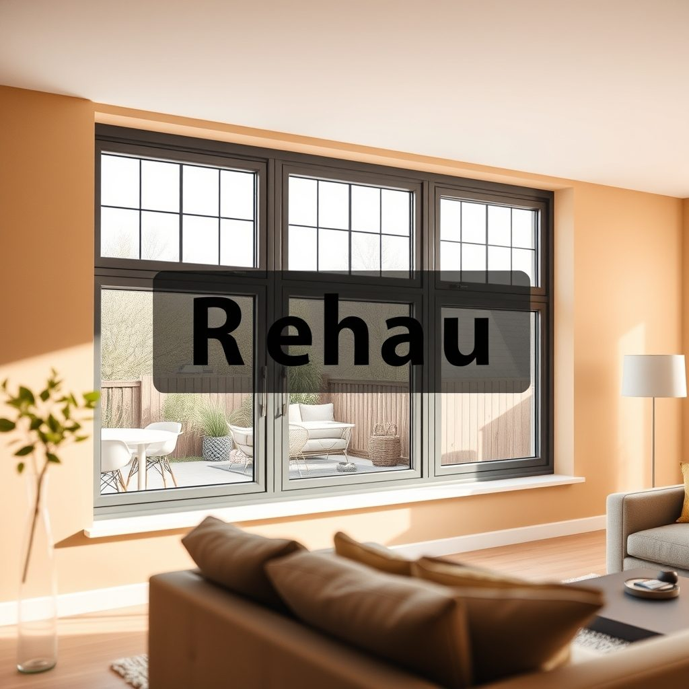
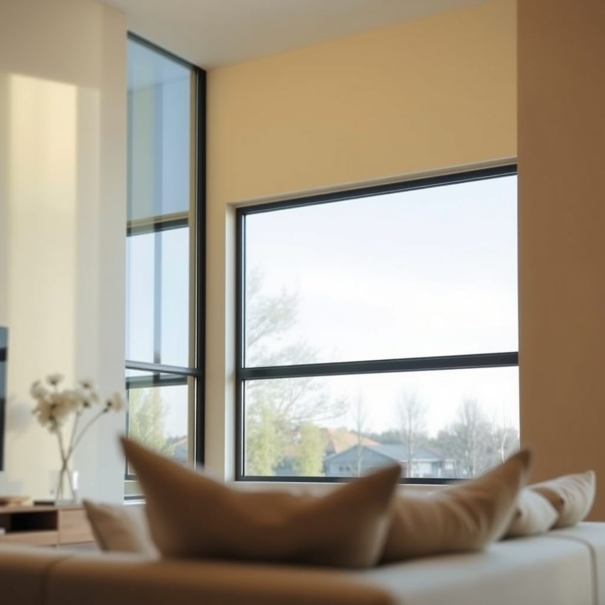

Алюминиевое остекление террасы в Северо-Западном округе — что важно знать

Как ухаживать за алюминиевым остеклением террасы в Северо-Западном округе — что важно знать? В Москве, в Северо-Западном округе, мы ставим такое остекление и учим бытовому обслуживанию.
Почему зимой на алюминиевом остеклении террасы появляется конденсат?
Конденсат появляется из-за разницы температур и влажности. Проверьте дренаж, уплотнители и приток воздуха; если вода стоит на подоконнике или полу, ищите забитый слив. Вывод: уберите причину, а не просто вытирайте воду.
Итог
Итог всегда один: назвать следующий шаг заказчику — бесплатный замер, расчёт на месте и фиксированная цена в договоре.
Что важно знать про алюминиевое остекление террасы в Северо-Западном округе
Начните с осмотра. Пройдите по створкам, рамам, порогу. Проверьте, нет ли воды на полу. Если есть, ищите причину в дренаже или уклоне. Очистите дренажные отверстия мягкой щёткой. Не ковыряйте их острым. Можно снять защитную планку, если она есть. Промойте профиль водой. Добавьте мягкое моющее средство. Тряпка должна быть без песка. Песок царапает покрытие. После мойки вытрите насухо. Особое внимание — нижней петле и замку. Там собирается грязь. Уплотнители протрите влажной тканью. Затем сухой. Раз в сезон проверяйте эластичность. Если резина задубела, она не держит. Трещины и зазоры — повод заменить. Смажьте фурнитуру силиконовой смазкой. Наносите мало. Лишнее уберите. Не используйте масло. Оно липнет к пыли. Проверьте ход створки. Она должна идти без усилия. Если цепляет, не применяйте силу. Вызовите мастера. Сами не подкручивайте сложные узлы. Проверьте ручки и запоры. Люфт недопустим. Проверьте крепёж в раме. Ослабшие винты подтяните аккуратно. Не перетяните. Проверьте стеклопакет. Сколы на кромке опасны. Если есть, меняйте. Герметик по периметру должен быть целым. Отслоение убирают и обновляют. Зимой не скалывайте лёд с профиля. Не лейте кипяток. Не используйте соль у порога. Соль разъедает покрытие и металл. Снег убирайте мягкой щёткой. Лёд не долбите. Весной проверьте после морозов. Осенью подготовьте к снегу. Если терраса закрыта, оставьте доступ к дренажу. Если открываете часто, смотрите петли чаще. Вода и грязь — главные враги. Сухость и смазка — ваши помощники. Делаем качественно.
Что делать с конденсатом на террасе
Сначала определите, что стоит на террасе: холодное алюминиевое остекление или с терморазрывом. От этого зависит уход. Холодный профиль не боится мороза, но внутри будет конденсат при перепаде. Терморазрыв держит тепло лучше. Смотрите на стеклопакет: одна камера или две. Для террасы в Москве важны ветер, снег и перепад температур. Проверьте дренажные отверстия в нижней части профиля. Если они забиты, вода пойдёт внутрь. Уплотнители должны быть мягкими, без трещин. Фурнитура должна ходить плавно, без рывков. Замки и ручки не должны люфтить. Рама крепится к основанию анкерами. Слабый крепёж даст перекос. Стекло не должно иметь сколов на кромке. Скол на кромке опасен. Швы герметика должны быть ровными. Если герметик отслоился, будет продувание. На террасе не должно быть воды у порога. Уклон и слив проверяются сразу. Если вода стоит, зимой она замёрзнет. Лёд распирает профиль. Летом пыль и пыльца забивают дренаж. Мыть нужно мягкой тканью и водой. Абразивы и кислоты не применять. Кислота съест покрытие. Щёлочь тоже вредит. После мойки протрите сухо. Смазка для фурнитуры нужна по сезону. Силиконовая смазка, не масло. Масло собирает грязь. Регулировку фурнитуры делает мастер. Самому лучше не крутить. Один неверный винт — и створка провиснет. Проверяйте всё весной и осенью. Так вы поймёте состояние до морозов. Если терраса закрыта весь год, осматривайте раз в сезон. Если открываете часто, смотрите чаще. Это и есть главное для террасы в Москве. Делаем качественно.
Бесплатный замер
Оставьте заявку на бесплатный замер: приедем в удобное время, посчитаем на месте и зафиксируем цену в договоре.
Призыв
Сколько стоит алюминиевое остекление цены в Северо-Западном округеСколько стоит алюминиевое остекление и какие цены в Северо-Западном округе? В Северо-Западном округе Москвы мы делаем алюминиевое остекление качественно: от …